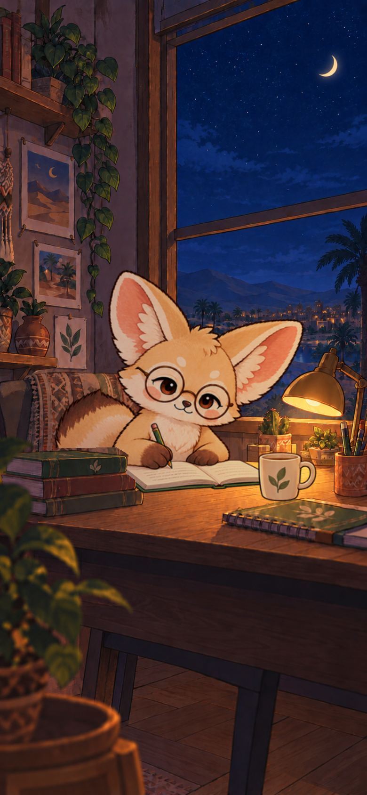
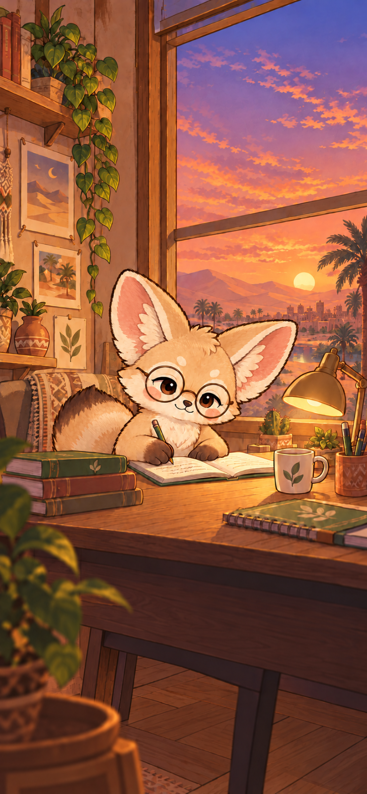
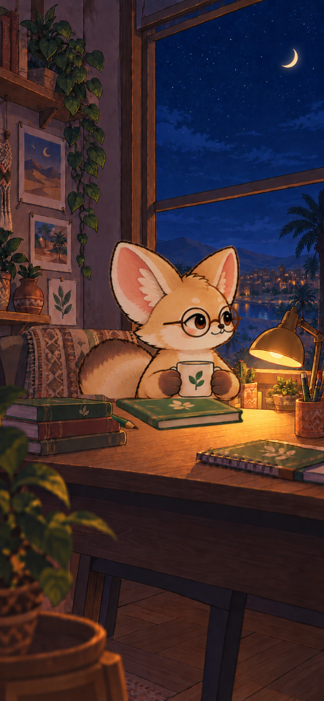
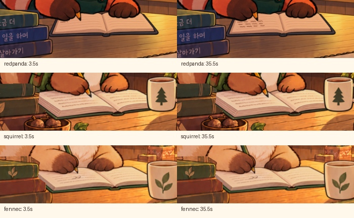
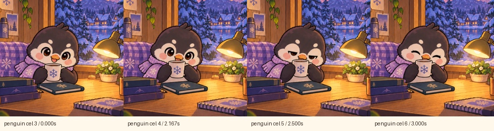
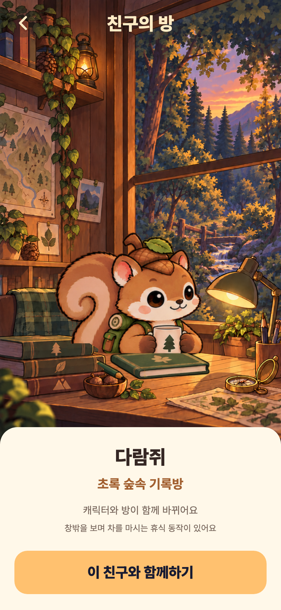

캐릭터 모션 추가 개선 검토
현재 버전에서 전환 중 장면 유지, 필기 글씨, 펭귄의 동작 밀도, 친구 미리보기를 더 다듬을 수 있어요.
10월 24일 · 코드 3fa176e에서 새로 캡처 · 다섯 친구의 집중·휴식 10종 · 3,922프레임
페이지 넘김 순서와 해달·다람쥐·사막여우의 휴식 속도는 최근 수정이 반영된 상태예요.
우선 수정 · 로딩 상태 재현1. 집중 → 휴식 전환: 밤 장면을 유지해야 해요
휴식 PNG를 처음 읽는 동안 기본 정지 일러스트가 표시돼요. 밤에 집중하다 휴식을 시작하면 사막여우는 밤 → 노을 → 밤, 다람쥐는 밤 → 낮 → 밤으로 바뀌는 현상이 재현됐어요.

① 전환 전 · 밤에 필기

② 휴식 원화 로딩 중 · 노을 정지 그림

③ 로딩 완료 · 밤에 차 마시기
개선: 새 원화가 준비될 때까지 현재 방과 자세를 유지하고 미리 불러오세요. 그다음 책을 덮고 컵을 잡는 연결 자세를 추가하면 집중·휴식도 한 장면처럼 이어질 수 있어요.
실제 앱 위젯의 로컬 PNG 읽기를 의도적으로 보류한 테스트예요. 실제 기기에서 이 화면이 얼마나 오래 보이는지나 얼마나 자주 나타나는지는 측정하지 않았어요. 전환 전후의 고개·책·컵도 즉시 바뀌므로, 로딩 문제와 행동 연결은 따로 다듬어야 해요.
몰입감 개선2. 필기: 글씨가 조금씩 늘어나면 좋아요
랫서팬더는 쓰는 동안 글씨가 늘어요. 나머지 네 친구는 3.5초와 35.5초의 같은 필기 자세를 비교하면 화면 픽셀이 모두 같아요. 손은 움직이지만 종이 내용은 그대로여서 같은 곳을 계속 쓰는 느낌이 날 수 있어요.

개선: 연필 끝에 맞춰 글씨를 조금씩 추가하고, 페이지가 넘어간 뒤 새 글씨로 시작하세요. 책 표지와 몸통은 지금처럼 고정하는 편이 좋아요.
낮은 우선순위 · 작화 보강3. 펭귄 휴식: 동작을 조금 더 촘촘하게 만들 수 있어요
펭귄은 쉬기·들기·마시기를 네 그림(3·4·5·6번)으로 표현해요. 반복 자체는 이어지지만 다른 친구보다 동작이 단순해요. 큰 오류 수정 이후 컵을 드는 사이 자세와 깜빡임을 보강하면 좋아요.

펭귄 · 22.333초 전체 변형 주기랫서팬더 · 10초 주기
같은 그림 수나 같은 주기가 모든 캐릭터에 필요한 것은 아니에요. 이 항목은 오류 판정이 아니라 작화 완성도를 높이는 제안이에요.
선택 경험 개선4. 친구 미리보기: 집중과 휴식을 모두 볼 수 있어야 해요
두 친구의 미리보기는 현재 휴식 동작만 보여줘요. 새 필기·페이지 넘김을 확인하려면 친구를 적용하고 집중을 시작해야 해요.
사막여우 미리보기 · 집중/휴식 선택 없음
다람쥐 미리보기 · 집중/휴식 선택 없음
개선: 미리보기에 ‘집중 / 휴식’ 선택을 추가하세요. 나중에 캐릭터 장면을 판매할 때도 사용자가 두 동작을 보고 선택할 수 있어요.
확인된 기반: 전체 앱 테스트 127개 통과 · 정적 분석 문제 없음 · 새 전체 캡처와 로딩 재현 검사 통과.
기존 일시정지·백그라운드·동작 줄이기 검사는 통과했어요. 이번 검토는 실제 Flutter 위젯 캡처와 코드 기준이며, 기기 GPU 녹화·TalkBack 실사용·전체 접근성 적합성 검사는 포함하지 않아요. 이번에는 앱 동작과 원화를 수정하지 않았어요.
근거와 상세 검토 기록 · 현재 영상·글씨 비교 수치 · 로딩·미리보기 재현 기록